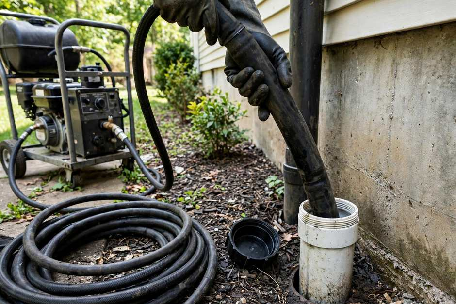
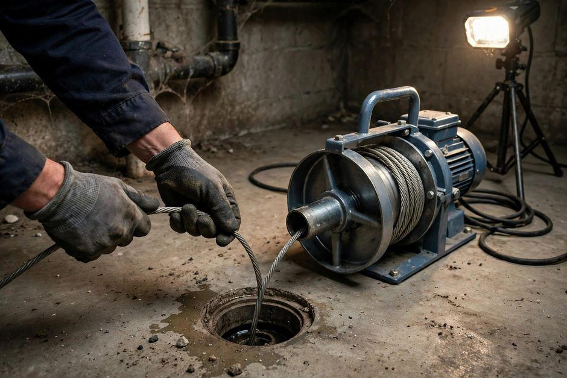

High-Pressure Drain Scouring
Hydro Jetting in Belleville, IL
Hydro jetting scours pipe walls with water under pressure to clear grease, scale, and root material that snaking alone may leave behind. Camera inspection comes before jetting, because jetting a cracked or collapsed pipe can worsen the damage. Hinkle Plumbing Company plans jetting in Belleville, IL after camera findings, with drain cleaning kept distinct as a separate method.
1610 W Main St, Belleville, IL 62220Monday through Friday, 8:00 AM to 4:30 PM(618) 677-6556
What This Service Covers
Hydro Jetting Scope in Belleville
Hydro jetting scope covers camera inspection, nozzle selection, scouring passes, and post-jetting camera review for drains and sewer lines in Belleville, IL. Each stage below reflects a distinct part of the method, and camera findings gate the work.
Pre-Jetting Camera Inspection
Camera inspection reviews pipe condition, blockage type, and structural concerns before jetting. Cracked, collapsed, or severely offset piping is identified at this stage, and jetting is not planned where camera findings show structural failure.
Grease and Scale Scouring
Grease layers and mineral scale on pipe walls are scoured to restore flow capacity. Scouring addresses wall buildup across the pipe circumference, rather than clearing only a narrow channel through the blockage.
Root Material Clearing
Root material entering through joints in clay piping is cut and flushed during jetting passes. Root findings from camera inspection shape nozzle selection, and remaining root intrusion patterns are discussed after jetting.
Recurring Clog Review
Recurring clogs are reviewed for underlying causes, including grease accumulation, scale, roots, and pipe condition. Jetting suitability reflects the cause pattern, and camera findings separate buildup concerns from structural concerns.
Post-Jetting Camera Review
Camera review after jetting confirms wall condition, remaining buildup, and structural findings. Post-jetting footage supports repair planning where structural concerns remain, and findings are discussed with the property owner.
Main Line and Branch Work
Jetting can address main lines and branch lines where camera findings support the method. Access points, cleanout locations, and pipe layout shape the plan, and each line is assessed on its own findings.
About Hinkle Plumbing Company
Jetting Planned From a Belleville Base
Hinkle Plumbing Company is based in Belleville, IL, and plans hydro jetting for drains and sewer lines in Belleville. Camera inspection comes before jetting on every job, and findings shape nozzle selection and pass planning.
Belleville homes include a large share of older piping, and in homes from earlier building eras, expect cast-iron drains and clay laterals with joints that admit roots. Grease, scale, and root material accumulate along pipe walls over time, and snaking alone can leave wall buildup in place. Hinkle Plumbing Company reviews camera findings before jetting, and sewer camera inspection footage guides the method for each line.

How we workImage showing hydro jetting equipment at a cleanout in a Belleville home.
How Jetting Is Planned
Hydro Jetting Steps
The steps flex with the condition of the job, but the sequence stays the same.
Discuss Clog History
Clog frequency, affected fixtures, and prior clearing attempts are discussed to understand the pattern. History details help separate a localized blockage from a main-line buildup concern before camera work begins.
Inspect With Camera
Camera inspection records pipe condition, blockage material, and structural findings along the line. Footage findings determine whether jetting is suitable, and structural failure findings redirect planning toward repair options.
Select Nozzle and Passes
Nozzle selection and pass planning reflect blockage material, pipe material, and camera findings. Grease, scale, and root material each call for a different approach, and pipe condition limits the method used.
Jet and Flush
Jetting passes scour pipe walls and flush loosened material downstream for removal. Flow is observed during passes, and additional passes reflect remaining buildup shown by camera or flow observations.
Review After Jetting
Post-jetting camera review confirms wall condition and remaining concerns. Findings are discussed, and repair or maintenance observations are shared where structural or recurring-cause findings remain.
Methods Compared
Jetting Compared With Other Clearing Methods
Jetting differs from snaking in purpose and result, and method selection reflects blockage material and pipe condition. The comparison below keeps each method distinct, so planning reflects camera findings rather than habit.
Snaking Compared
Snaking punches a hole through a blockage to restore flow, often leaving wall buildup in place. Snaking suits localized clogs, while jetting suits wall buildup, grease, scale, and root material across a longer pipe section.
Jetting Scour Action
Jetting directs water streams against pipe walls to scour buildup around the full circumference. Scouring restores wall condition more completely than a single channel, where camera findings show the pipe can accept the method.
Camera Gate Rule
Camera inspection before jetting is non-negotiable, because jetting a cracked or collapsed pipe can worsen structural damage. Camera findings gate every jetting decision, and no jetting scope is set without footage review.
Nozzle Selection
Nozzle selection reflects blockage material and pipe condition, with different heads suited to grease, scale, and root material. Selection is confirmed from camera findings, and pipe material limits the approach used.
Access and Cleanouts
Cleanout locations and access points shape jetting setup and hose routing. Access findings are reviewed during camera inspection, and additional access needs are discussed before jetting begins.
Repair Referral Path
Where camera findings show collapse, severe offsets, or bellies, jetting gives way to repair planning. Repair options are discussed separately, and jetting is not used as a substitute for structural repair.
Common Patterns
When Hydro Jetting Is Discussed
Jetting discussions often follow recurring clogs or slow drainage that clearing alone has not resolved. The patterns below describe common reasons for camera review and jetting planning, without describing a specific property.

Recurring Kitchen Drain Slowing
A common call describes a kitchen drain that slows again after clearing, with grease buildup suspected along the line. Camera inspection reviews wall buildup and pipe condition before jetting is planned. Jetting scours grease from pipe walls where footage supports the method, and post-jetting review confirms wall condition and remaining concerns. Assessment findings are discussed plainly before work scope is set for the property.
Main Line Root Intrusion Pattern
A common call describes main-line slowing with root material found during prior clearing work. Camera inspection reviews joint condition, root entry points, and structural findings before jetting scope is set. Jetting cuts and flushes root material where the pipe can accept the method, and remaining intrusion patterns are discussed after review. Combined findings shape the plan, and household observations are included in the discussion.
Signs to Note
Drain Signs That Point to Jetting Review
Most calls fall into a few patterns. Knowing which pattern applies decides what the visit involves.
Clogs That Return
Clogs that return after clearing can signal wall buildup, grease, scale, or roots left in place. Recurrence patterns are reviewed with camera findings, because repeated clearing without wall scouring leaves the underlying buildup untouched.
Slow Drainage Across Fixtures
Slow drainage across several fixtures can point to main-line buildup rather than a single trap fault. Flow patterns across fixtures shape camera scope, and jetting suitability follows from footage findings.
Drain Odor With Slowing
Drain odor combined with slowing can reflect buildup along pipe walls. Odor and flow findings are reviewed together, and camera inspection separates buildup concerns from venting or trap concerns. Findings are reviewed during assessment.
Gurgling at Fixtures
Gurgling at fixtures during drainage can signal restricted flow or venting interaction along the line. Gurgling patterns are reviewed with camera findings, and jetting is planned only where footage supports the method.
Scope Factors
What Shapes Hydro Jetting Scope
Line length, buildup type, and access shape jetting scope.
Line Length and Layout
Longer lines, branch layouts, and multiple affected sections add scope to camera and jetting passes. Layout findings from camera inspection shape the plan, and scope is discussed by phone before work is scheduled.
Buildup Material
Grease, scale, and root material each affect pass planning and nozzle selection. Material findings from footage shape the approach, and remaining buildup after jetting is confirmed by post-jetting review. Findings shape the scope discussion.
Access and Condition
Cleanout access, pipe condition, and structural findings affect setup and method choice. Access findings are reviewed during planning, and readers are invited to call to discuss scope for a specific property.
Reviews from Google
What Customers Say on Google
★★★★★
“Very prompt and responsive, the worker was friendly and informative! Will use this company again!”
★★★★★
“Don did an outstanding job for me when I needed him and highly recommend his business”
★★★★★
“Rated 5.0 out of 5 across 3 Google reviews, all five stars.”
Is camera inspection required before hydro jetting?
Yes. Camera inspection is completed before jetting is planned, because jetting a cracked or collapsed pipe can worsen structural damage. Footage findings show buildup type and pipe condition, and jetting scope follows from those findings rather than from symptoms alone.
How is hydro jetting different from drain cleaning?
Drain cleaning with a cable punches a hole through a blockage to restore flow, often leaving wall buildup in place. Hydro jetting scours pipe walls around the full circumference to address grease, scale, and root material where camera findings support the method.
Can jetting fix a collapsed pipe?
No. Jetting addresses buildup on pipe walls and does not repair collapse, severe offsets, or bellies. Where camera findings show structural failure, planning moves to repair options, and jetting is not used as a substitute for structural repair work. Household observations are included in the discussion, and findings shape the response.
What affects the scope of a hydro jetting job?
Line length, buildup material, pipe condition, and cleanout access shape the scope. Camera findings from inspection are reviewed before planning, and readers are invited to call (618) 677-6556 to discuss scope for a specific property in Belleville. Findings are discussed by phone before work is scheduled.
Related services
Other Plumbing Services We Handle

Drain Cleaning in Belleville, IL
Drain cleaning covers cable clearing for localized clogs and is kept distinct from hydro jetting wall scouring.
Sewer Camera Inspection in Belleville, IL
Sewer camera inspection provides footage that gates jetting decisions and guides sewer repair planning.
Sewer Line Repair in Belleville, IL
Sewer line repair covers structural fixes where camera findings show damage that jetting cannot address.Mon–Fri 8:00 AM–4:30 PM
Discuss Hydro Jetting in Belleville
Call (618) 677-6556 during Monday through Friday, 8:00 AM to 4:30 PM to discuss hydro jetting in Belleville. Closed Saturday and Sunday. Camera inspection is completed before jetting scope is set.

Talk with the local team
Request Hydro Jetting
Call (618) 677-6556 during office hours, Monday through Friday, 8:00 AM to 4:30 PM. Tell us what is happening and we will talk through the next step.